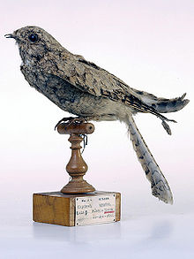
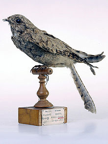

| Egyptian Nightjar | |
|---|---|
|  | |
| Conservation status | |
| Binomial name | |
| Caprimulgus aegyptius Lichtenstein, 1823 |
| Egyptian Nightjar | |
|---|---|
|  | |
| Conservation status | |
| Binomial name | |
| Caprimulgus aegyptius Lichtenstein, 1823 |
The Egyptian Nightjar, Caprimulgus aegyptius, is a medium-small nightjar which occurs in south west Asia and north Africa, and winters in tropical Africa. It is a late migrant, seldom appearing before the end of April or beginning of May. It is a rare visitor to Europe, but, remarkably, has twice occurred as far away as Great Britain.
Open desert with a few trees or bushes are the haunts of this crepuscular nightjar. It flies at dusk, most often at sundown, with an easy, silent moth-like flight; its strong and deliberate wingbeats alternate with sweeps and wheels with motionless wings.
The variegated plumage is much paler than the European Nightjar. The adult is sand-colours, barred and streaked with buff and brown. The under parts are sandy or whitish. It is smaller, but relatively longer-winged and longer-tailed than the more widespread species. Like other nightjars, it has a wide gape, long wings, soft downy plumage and nocturnal habits. The male has tiny white wing spots. The length is 25cm, and the wingspan 55cm.
Its call is a repetitive mechanical kroo-kroo-kroo…, which rises and falls as the bird turns its head from side to side. Crepuscular insects, such as moths, are its food.
During the day this nightjar lies silent upon the ground, concealed by its plumage; it is difficult to detect, blending in with the sandy soil. No nest is made; the two elongated and elliptical eggs are placed upon the bare ground; the brooding bird, sitting closely, is their best protection.

{kind=link}
{kind=link}
{kind=link}